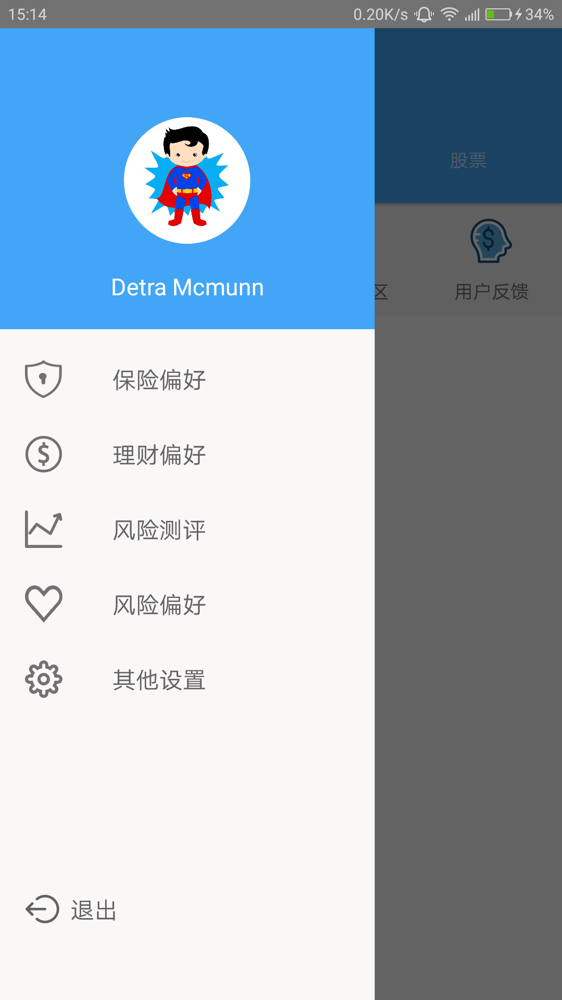
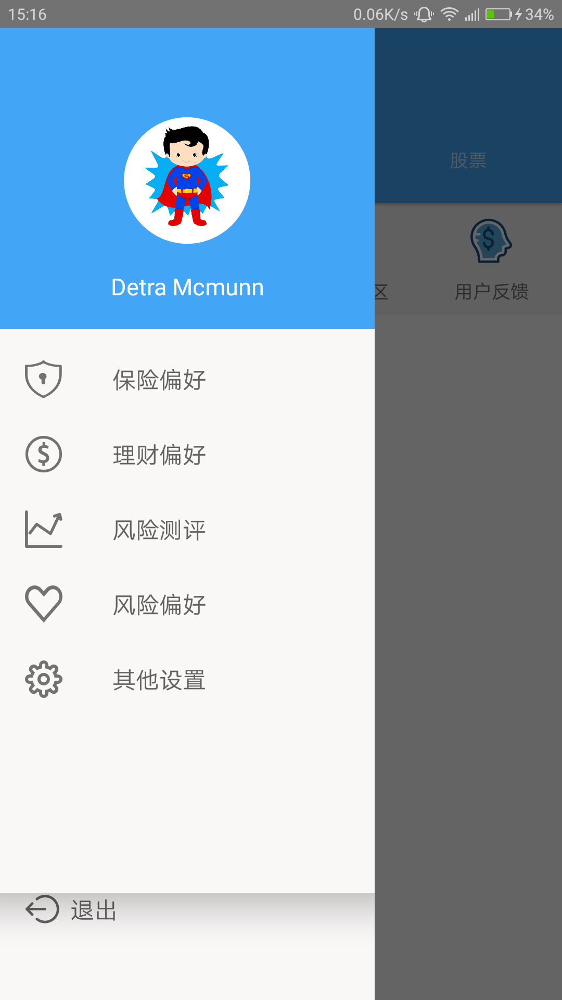

文章分为四个部分
- NavigationView + DrawerLayout实现侧边栏
- NavigationView与Toolbar/Actionbar结合
- 遇到的一个坑
- （引）NavigationView中item小红点通知标记的实现
NavigationView + DrawerLayout实现侧边栏
先介绍DrawerLayout，这是一个布局文件，主要分为主布局内容和侧边菜单内容两部分，通过子控件的layout_gravity来设置，首先是布局文件如下：
1 | <?xml version="1.0" encoding="utf-8"?> |
在上面代码中，可以看到DrawerLayout中，有两个LinerLayout，第一个里面是主布局内容，第二个是侧边栏布局内容，第二个LinerLayout中，使用android:layout_gravity设置位置，left 或者 start表示左侧，right 或者 end表示右侧
其中layout_side.xml内容如下：
1 | <?xml version="1.0" encoding="utf-8"?> |
布局文件中，为了实现侧边栏最底部有一个退出选项。至于NavigationView外部还包裹了一层LinearLayout，则是我遇到的一个奇怪的地方~第三部分细讲
NavigationView中，分为头部内容和menu内容，本文章中头部内容布局文件仅一个圆形头像和一个昵称，布局文件则省略
//设置头部内容
app:headerLayout="@layout/layout_side_header"
//设置menu内容
app:menu="@menu/menu_side"
//设置menu的item文字字体
app:itemTextAppearance="@style/SideText"
现在已经实现侧边栏了~
NavigationView与Toolbar/Actionbar结合
App中经常是点击顶部标题栏左侧按钮，就弹出NavigationView，本文中标题栏使用的是Toolbar，在上面主内容布局中可以看到~
实现代码如下
1 | /** |
重点在于ActionBarDrawerToggle，new的参数解释如下
1 | Parameters: |
这部分我也没太弄懂，尤其是最后两个string，下面单独提出的两行代码，是替换Toolbar左侧按钮样式的，默认为三根横杠
1 | toggle.setDrawerIndicatorEnabled(false); |
遇到的一个坑
前面有说到，NavigationView外面另外包裹了一层LinearLayout，是因为，如果我布包裹这一层，则会使我下面那个TextView的背景颜色怪怪的~即使我为TextView设置背景色也不起作用，很无奈~看图~
不包裹LinearLayout

包裹之后

（引）NavigationView中item小红点通知标记的实现
主要是记录一下，方便下次实现